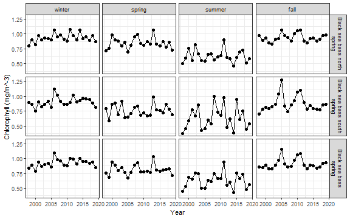
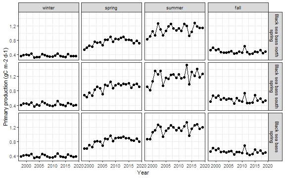

4.1 Primary production
Chlorophyll-a and primary production were sourced from the ecodata package.
4.1.1 Figures
Chlorophyll in the stock region
testing
Primary production in the stock region
testing
4.1.2 Data
Chlorophyll in the stock region
testing
Primary production in the stock region
testing